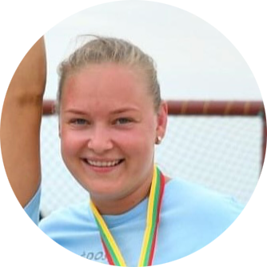
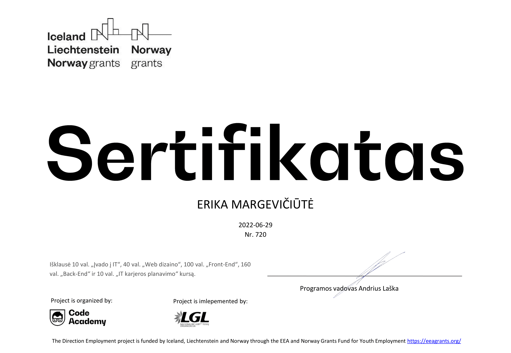

|  | Erika Margevičiūtė, 27m.KlaipėdaTel. nr: +37065860483El. paštas: eri.margeviciute@gmail.com |
Atsakinga, darbšti, tolerantiška, punktuali, greitai mokausi, vertinu žinojimą, konkretumą ir tikslumą. Jei kyla abejonių, visada siekiu jas pašalinti. Laisvai kalbu anglų, serbų kalbomis, suprantu bei galėčiau susikalbėti rusiškai (dėl kalbos nenaudojimo kasdienoje negaliu teigti, jog kalbu laisvai). Studijavau Klaipėdos Valstybinėje Kolegijoje bendrosios praktikos slaugą, tačiau baigiau tik pirmą ir antrą kursus, ateityje planuoju įgyti aukštajį išsilavinimą. 2,5 metų dirbau Yazaki Wiring Technologies Lietuva kaip kokybės kontrolierė, įmonė siuntė į komandiruotes Vokietijoje ir Serbijoje. Kaip kokybės kontrolierė dirbau ir mažesnėje baldų gamybos įmonėje "Home Group", tačiau tai truko tik 3 mėnesius, nes darbas man pasirodė per daug monotoniškas ir nemačiau perspektyvos galimybių. Šiuo metu domiuosi IT sritimi tiek savarankiškai, tiek dalyvaudama mokymuose.
2014 m. įgijau vidurinį išsilavinimą Klaipėdos "Vėtrungės" gimnazijoje
2022 m. dalyvavau LGL organizuojamame 3 mėnesių projekte, kuriame susipažinau su IT sirtimi ir įgijau sertifikatą.
| Kalba | Kalbėjimas | Supratimas | Rašymas |
| Lietuvių | Puikiai | Puikiai | Puikiai |
| Anglų | Gerai | Gerai | Gerai |
| Rusų | Gerai | Gerai | Gerai |
| Serbų | Gerai | Gerai | Gerai |
"Yazaki Wiring Technologies Lietuva" - Kokybės kontrolierė
"Home Group" - Kokybės kontrolierė
Rekomendacijos: Esant poreikiui pateiksiu rekomendacijas ar rekomenduojančių asmenų kontaktus.
Vairuotojo pažymėjimas - nuo 2013 m.
Laisvalaikiu domiuosi psichologija, žaidžiu rankinį Klaipėdos moterų rankinio komandoje.